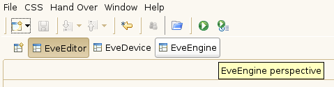

Depending on what you want to do (monitor/manipulate devices or execute scans) either activate the EveDevice or EveEngine Perspective by clicking on the respective button at the top of the window (see following image for illustration).
